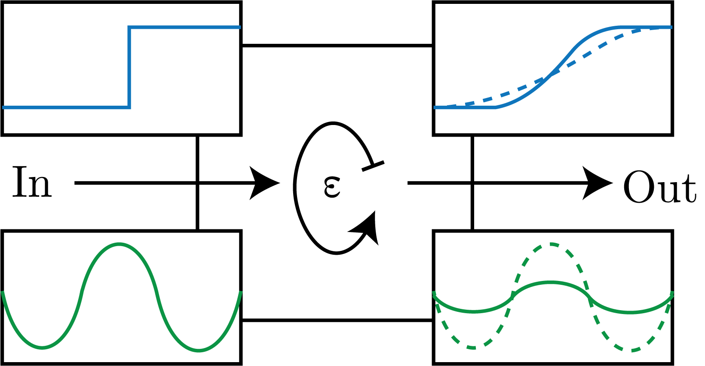

We consider the model presented in Fig. 1, in which there is some isotope fractionation process that is occurring within the box with fractionation $\epsilon.$

Fig. 1: A schematic of our box model.
We first start with the conservation of mass, that is:
\begin{equation}
\frac{\textrm{d}N}{\textrm{d}t} = \sum J_{in} - \sum J_{out}.
\end{equation}
We can then move this to include the ratios:
\begin{equation}
\frac{\textrm{d}}{\textrm{d}t}\left[N R_{box}\right] = \sum J_{in}R_{in} - \sum J_{out}R_{out},
\end{equation}
where we note that we can have $R \to \delta$ only when $\langle \delta \rangle_c^2 \ll 1$.
Oftentimes we consider the steady state, which allows us to the set the LHS of the above equations to 0.
Therefore, we get:
\begin{equation}
R_{box_{ss}} = \frac{\sum J_{in}R_{in}}{\sum J_{out}},
\end{equation}
for which we do not consider fractionation yet.
We note that the determination of steady state, and whether our system is steady, is non-trivial.
Step-wise Forcing Function
For a step-wise forcing function of the form $J = J_0 + J'$ is given by:
\begin{equation}
R_{box}(t) = R_{box_{ss}} - \left(R_{box_{ss}} - R_{box}(t_0) \right) \exp\left[\left( t - t_0 \right) / \tau \right],
\end{equation}
where we have that $\tau$ is the $\text{e}$-folding time scale of the system, or the residence-time.
We can see these are the top set of input and output functions in Fig. 1.
Periodic Forcing Function
We consider the general equation:
\begin{equation}
\frac{\textrm{d}M}{\textrm{d}t} = J_0 + b\sin\left[\omega t\right] - kM,
\end{equation}
for $\omega = 2\pi / T$, $T$ the period, and $k = 1 / \tau$.
This is a first order linear nonhomogenous differential equation.
This has a solution of the form:
\begin{equation}
M = M_0\exp\left[-kt\right] + \frac{J_0}{k}(1 - \exp\left[-kt\right]) + \frac{b\omega}{k^{2}\omega^{2}}\exp\left[-kt\right] + \left( \frac{bk}{k^{2} + \omega^{2}}\sin\left[\omega t\right] \right) - \left( \frac{b\omega}{k^{2} + \omega^{2}} \cos\left[\omega t\right]\right).
\end{equation}
We can simplify this for a range of different initial BCs, such as $M(0) = 0, b = 0$, which gives:
\begin{equation}
M = \frac{J_0}{k}(1 - \exp\left[-kt\right]),
\end{equation}
which doesn't really do much for this scenario as we have neglected the periodic boundary forcing.
We can then assume that $t \gg 1$, which then means that:
\begin{equation}
M = \frac{J_0}{k} + \frac{bk}{k^{2} + \omega^{2}}\sin\left[\omega t\right] - \frac{b\omega}{k^{2} +\omega^{2}}\cos\left[\omega t\right].
\end{equation}
Now, let's say that $\omega \ll k$, or that $T \gg \tau$. We can make an analogy to oxygen in glacial-interglacial forcing. This then gives:
\begin{equation}
M = \frac{J_0}{k} + \frac{b}{k}\sin\left[\omega t\right].
\end{equation}
We can then say that the system responds in phase.
Next, let's consider the opposite of the above, or that $\omega \gg k$ or that $\tau \gg T$. This is the case of Sr in the glacial-interglacial forcing.
The solution is then:
\begin{equation}
M = \frac{J_0}{k} - \frac{b}{\omega}\cos\left[\omega t\right] = \frac{J_0}{k} + \frac{b}{\omega}\sin\left[\omega - \frac{\pi}{2}\right].
\end{equation}
Therefore, we have a solution that is of the form in the previous case but with a phase shift of $\pi / 2$.
Thus, the response is delayed by a maximum of 1/4 of the forcing oscillation and the amplitude is damped.
We note that this effect increases for increased response time, $\tau$.
Therefore, we find that the response is driven by the response time, the magnitude of the forcing function, and the period of forcing oscillation.
We note that this shows us that we have not shown at that Sr varies on glacial-interglacial timescales... even today!